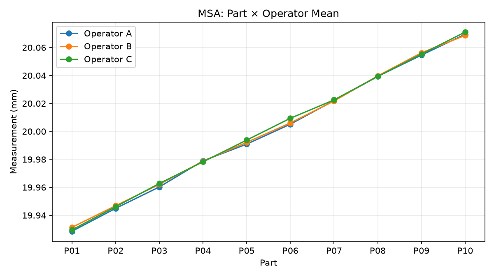
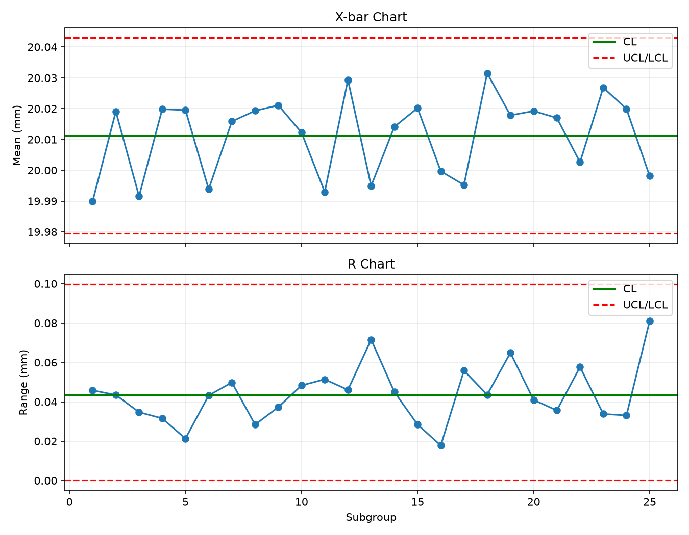
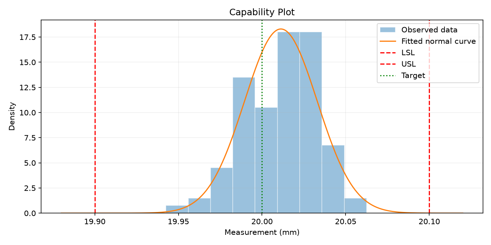

報告狀態：能力分析已完成（教學範例）
產生時間：2026-10-16T11:08:40+08:00
| 欄位 | 設定值 |
|---|---|
| characteristic | 軸徑 |
| unit | mm |
| LSL | 19.9 |
| USL | 20.1 |
| target | 20.0 |
| measurement_system_id | GAGE-DEMO-01 |
| data_version | teaching-demo-1.0 |
| data_source | 前一個 Python 範例產生的模擬資料 |
| MSA 項目 | 結果 |
|---|---|
| 零件數 | 10 |
| 作業員數 | 3 |
| 每組重複數 | 2 |
| Gage R&R SD | 0.00147 |
| %Study Variation | 3.12288 |
| %Tolerance | 4.40054 |
| ndc | 45 |
| 教學用 MSA 閘門 | 通過 |
方法：平衡交叉設計 ANOVA 方法矩估計。

| sum_sq | df | F | PR(>F) | mean_sq | |
|---|---|---|---|---|---|
| C(part) | 0.119041 | 9 | 8946.25 | 6.70388e-49 | 0.0132268 |
| C(operator) | 1.96988e-05 | 2 | 6.66187 | 0.00403581 | 9.84941e-06 |
| C(part):C(operator) | 3.67974e-05 | 18 | 1.38271 | 0.21057 | 2.0443e-06 |
| Residual | 4.43543e-05 | 30 | NaN | NaN | 1.47848e-06 |
管制圖結果：未發現 3-sigma 界外點
X-bar 圖界外子組：[]
R 圖界外子組：[]

常態性檢查 p 值： 0.52321 （若未執行則無資料）
能力指標信賴區間採用子組重抽樣 bootstrap， 屬本課程的教學示範方法。
| 項目 | 結果 |
|---|---|
| 平均值 | 20.01127 |
| 組內標準差 | 0.02119 |
| 整體標準差 | 0.02180 |
| Cp | 1.57306 |
| Cpk | 1.39581 |
| Pp | 1.52907 |
| Ppk | 1.35678 |
| 常態模型預估總不良率 (ppm) | 23.63977 |
